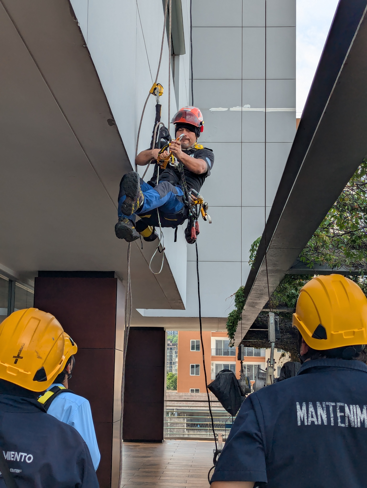
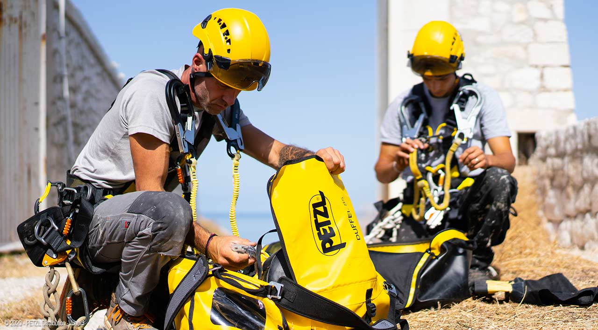
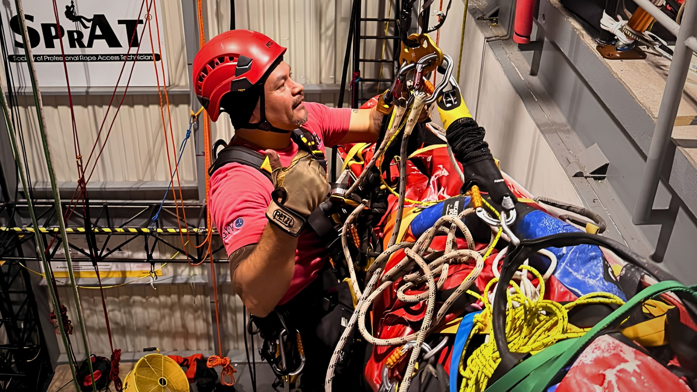
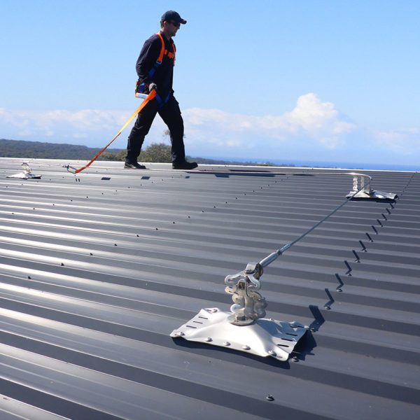

PETZL.
Equipamiento para trabajos en altura, acceso por cuerda y rescate.
Explorar productos ↗Soluciones integrales en equipamiento, capacitación, auditorías e ingeniería para trabajos en altura, acceso por cuerda y protección contra caídas.
Con presencia en Honduras y El Salvador, acompañamos a empresas que necesitan proteger a sus equipos y fortalecer sus operaciones. Integramos equipamiento profesional, capacitación técnica, auditorías e instalación de sistemas de seguridad.
Desde la elección del equipo hasta la instalación de sistemas y la preparación del personal, conectamos los elementos que ayudan a trabajar con mayor control.
Este espacio está preparado para incorporar fotografías reales de proyectos, entrenamientos y actividades de Vertical Safety.




Capacitaciones para fortalecer la prevención, el uso adecuado de equipos y la respuesta organizada ante situaciones de riesgo.
Conoce el enfoque de los fabricantes que representamos y consulta por productos de acuerdo con tu aplicación.
Equipamiento para trabajos en altura, acceso por cuerda y rescate.
Explorar productos ↗Sistemas y soluciones técnicas para seguridad en estructuras y cubiertas.
Explorar productos ↗Soluciones de anclaje y protección contra caídas para diferentes entornos.
Explorar productos ↗